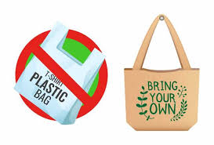
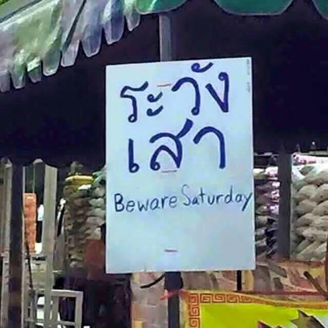
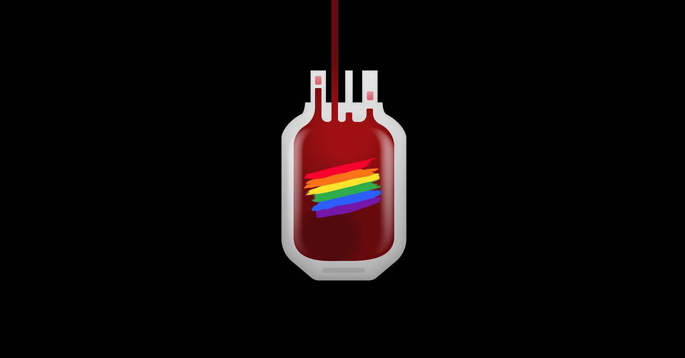
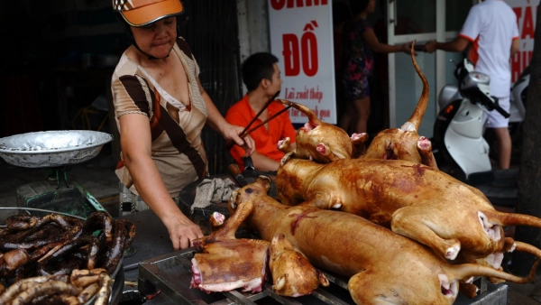

stop beauty standard

มาตรฐานความสวยถูกกำหนดขึ้นผ่านบริบทมากมายในสังคม จะเห็นได้จากสื่อโฆษณาที่ชี้นำให้ผู้คนคิดว่า จะต้องมีสีผิวแบบนั้น หุ่นแบบนี้ เพื่อนำไปสู่ เวทีประกวดต่างๆ ที่ใช้รูปร่างหน้าตาเป็นเกณฑ์ ซึ่งเมื่อตัดสินผู้ชนะในตอนสุดท้าย ก็ถือเป็นการเคาะสรุปว่า หน้าตาที่สวยหล่อควรจะเป็นแบบไหน และมาตรฐานนี้ก็ถูกสนับสนุนมากขึ้นเรื่อยๆ
อ่านต่อกระแสรณรงค์การใส่เสื้อผ้าซ้ำ มายังไง
สืบเนื่องมาจากกระแสทั่วโลกอย่าง fash fashion ในต่างประเทศที่เป็นศูนย์รวมอุตสาหกรรมแฟชั่น อย่างในช่วง London Fashion Week ที่เรียกได้ว่า สินค้าแฟชั่นกลายเป็นผลผลิตของพลาสติกแบบใช้ครั้งเดียวแล้วทิ้งอีกประเภทหนึ่ง
อ่านต่อลดขยะพลาสติกช่วยโลก
ปัจจุบันคนไทยสร้างขยะพลาสติก 2 ล้านตันต่อปี ส่งผลให้มีการตื่นตัวต่อปัญหาขยะพลาสติก ปัญหาหลักของภาวะโลกร้อนคือการใช้ถุงพลาสติกและผลิตภัณฑ์ที่ย่อยสลายยาก ทั้งการใช้ถุงพลาสติก หลอดพลาสติก ล้วนแล้วแต่เป็นต้นเหตุของขยะมูลฝอยที่ต้องใช้เวลาหลายร้อยปี
อ่านต่อการล้อภาษาอังกฤษสำเนียงไทย เรื่องไม่เล่น
การพูดคุยสื่อสารภาษาอังกฤษโดยใช้สำเนียงของคนไทย เกิดการตั้งข้อสงสัยว่า พูดสำเนียงไทยแล้วผิดมั้ย
อ่านต่อการบริจาคเลือดของกลุ่ม LGBT+ ในไทยบริจาคได้หรือไม่ได้ ทำไมกันนะ
ข่าวสภากาชาติขาดแคลนเลือดในคลัง ในช่วงการแพร่ระบาดโควิด ทำให้มีผู้บริจาคเลือดอย่างกลุ่มคนหลากหลายทางเพศได้เข้ามาร่วมบริจาคจนกลายเป็นประเด็น ทั้งที่มีสุขภาพร่างกายแข็งแรงดี ไม่มีโรคประจำตัว ไม่มีพฤติกรรมเสี่ยงต่อสุขภาพ เพราะติดเงื่อนไขบางประการที่ศูนย์บริการโลหิตแห่งชาติฯ หรือโรงพยาบาลในไทยไม่ยอมรับ
อ่านต่อ‘สินสอด’ยังควรมีอยู่อีกไหมในยุคนี้?

สืบเนื่องจากกระแสสังคม จากประเด็นการแสดงความคิดเห็นต่อประเด็น “สินสอด” ของชายหนุ่มคนหนึ่งที่ออกมาโพสต์ลงสื่อออนไลน์ และยิ่งทำเอาร้อนระอุไปทั่วโลกออนไลน์ เมื่อนักแสดงสาว “ก้อย – อรัชพร โภคินภากร” ออกมาแสดงความคิดเห็นต่อประเด็นดังกล่าวผ่านไอจีสตอรี่
อ่านต่อกระแสรณรงค์เลิกทานเนื้อสุนัขและแมว มายังไง??
สืบเนื่องจากกระแสโลกจากหลายๆประเทศ มีการรับประทานเนื้อสุนัขเป็นอาหารอย่าง ประเทศเวียดนาม มีการฆ่าและค้าขายเนื้อสุนัขและแมว ประเทศจีนมีเทศกาลการรับประทานสุนัข ซึ่งขัดกับอารยธรรมต่อสายตาชาวต่างชาติ
อ่านต่อ